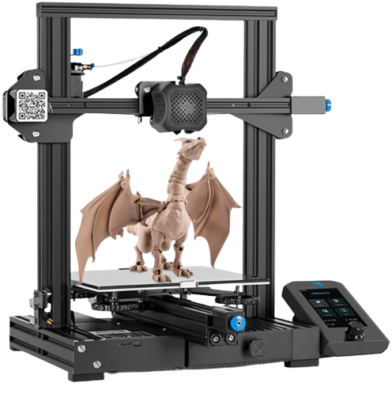
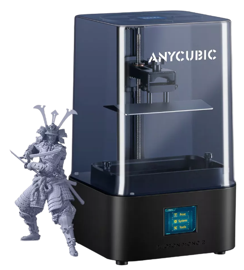
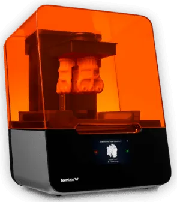
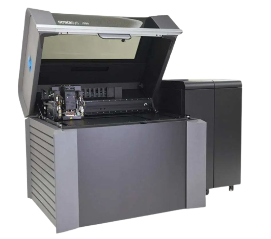
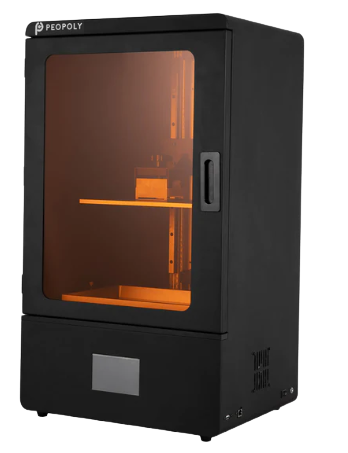
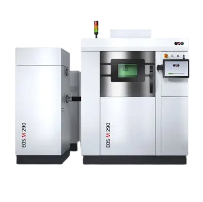

Impressoras 3D Fused Deposition Modeling (FDM):
Marca Popular: Creality
Modelo Popular: Creality Ender 3 V2
Preço: Cerca de $250 a $300 (Dolares)
Uma impressora 3D Fused Deposition Modeling (FDM) é um tipo comum de impressora 3D que funciona usando uma técnica de fabricação aditiva. A FDM é uma das tecnologias de impressão 3D mais acessíveis e amplamente utilizadas.

Impressoras 3D Stereolithography (SLA):
Marca Popular: Anycubic
Modelo Popular: Anycubic Photon Mono
Preço: A partir de $200 a $300(Dolares)
Uma impressora 3D Stereolithography (SLA) é um tipo de impressora 3D que utiliza a tecnologia de estereolitografia para criar objetos tridimensionais. A SLA é uma das tecnologias de impressão 3D mais antigas e é conhecida por sua alta precisão e capacidade de criar peças com detalhes muito finos e superfícies suaves

Impressoras 3D Selective Laser Sintering (SLS):
Marca Popular: Formlabs
Modelo Popular: Formlabs Form 3
Preço: Geralmente acima de $3.000(Dolares)
Uma impressora 3D Selective Laser Sintering (SLS) é um tipo de impressora 3D que utiliza a tecnologia de sinterização seletiva a laser para criar objetos tridimensionais. A SLS é conhecida por sua capacidade de imprimir peças funcionais e duráveis, muitas vezes usando uma variedade de materiais em pó, incluindo plásticos, polímeros, metais e até mesmo cerâmica.

Impressoras 3D PolyJet Printing:
Marca Popular: Stratasys
Modelo Popular: Stratasys J750
Preço: Geralmente acima de $50.000 (Dolares)
Uma impressora 3D PolyJet Printing é um tipo de impressora 3D que utiliza a tecnologia de jato de tinta para criar objetos tridimensionais. Esta tecnologia é conhecida por sua capacidade de produzir peças com alta precisão, detalhes finos e uma ampla variedade de materiais de impressão, incluindo materiais fotopolímeros.

Impressoras 3D Digital Light Processing (DLP):
Marca Popular: Peopoly
Modelo Popular: Peopoly Phenom
Preço: Geralmente acima de $1.000
Uma impressora 3D Digital Light Processing (DLP) é um tipo de impressora 3D que utiliza a tecnologia de processamento de luz digital para criar objetos tridimensionais. A DLP é semelhante à tecnologia SLA (Stereolithography), mas em vez de um laser, utiliza um projetor digital para curar camadas finas de resina líquida fotossensível.

Impressoras 3D de Metal:
Marca Popular: EOS
Modelo Popular: EOS M 290
Preço: Geralmente acima de $250.000
Uma impressora 3D de metal é um tipo especializado de impressora 3D que é capaz de fabricar peças tridimensionais usando materiais metálicos, como aço inoxidável, titânio, alumínio e outros metais. Essas impressoras 3D são utilizadas principalmente na indústria de manufatura avançada e engenharia para produzir componentes de metal complexos e personalizados com alta precisão.
Lembre-se de que esses preços são apenas uma estimativa e podem variar. Além disso, existem muitas outras marcas e modelos no mercado, cada uma com suas próprias características e preços. Ao considerar a compra de uma impressora 3D, é importante pesquisar as especificações e ler análises para garantir que atenda às suas necessidades específicas de impressão 3D.